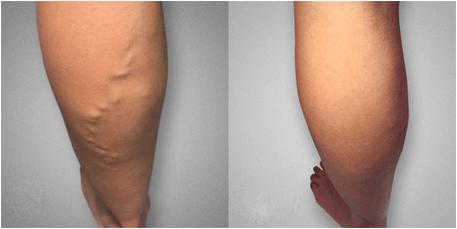
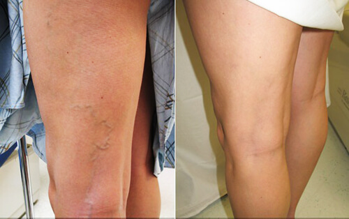
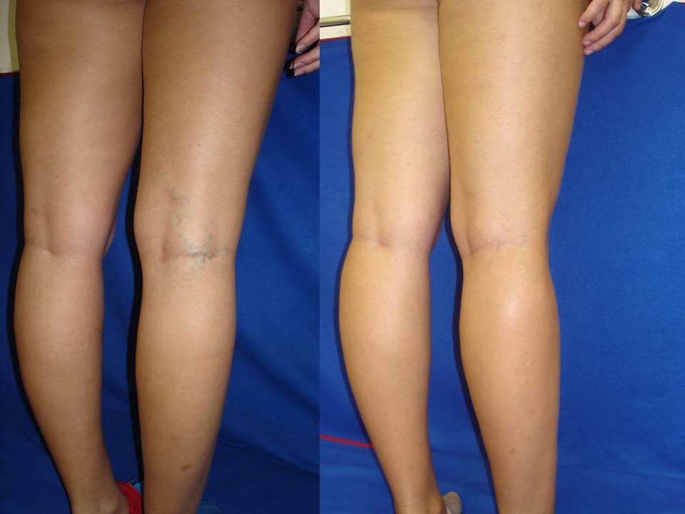
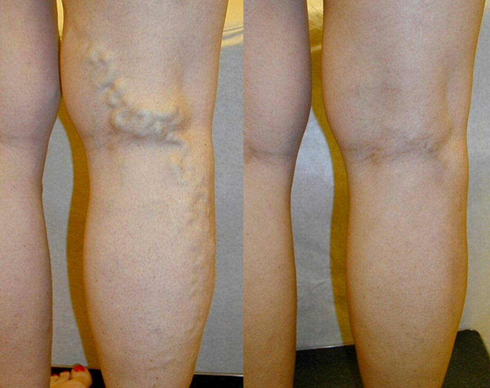

مدونة سمـيرة
كيف تخلصت من الدوالي في أسبوع واحد
| سمـيرة
أهلاً بكم، أنا معكم مجددًا! أود أن أشاركم بعـض البهجـة...على الرغم من كل شيء تمكنت من التخلص من الدوالي بالمنزل في أسبوع واحد!!!
هل تتذكرون منذ حوالي سنة كتبت أنني أعاني من ألم فظيع في ساقاي واتضح أنها الدوالي؟ وطلبت نصيحتكم - كيف أتخلص منها.
حسنًا، لقد جـربت كل الطرق الشعبية المتاحة بما في ذلك المواد الكيميائية وغيرها من الأشياء لا قيمة لها، لتحسين تدفق الدم وجوارب الضغط وما إلى ذلك. كـل هـذا محض هراء . لا يجدي نفعًا. لا فائدة منه.
ذهبت إلى المختصين. ولكن بدلاً من مساعدتي وبخـوني لتأخير البدء في التخلص من الدوالي . أخذت إجازة غير مدفوعة الأجر لمدة أسبوع من العمل. أصبـت باكتئاب حاد، فكرت مليًا في طرق للتخلص من الدوالي و استعادة جمال وصحة ساقاي وبحثت عن طرق مختلفة على شبكة الإنترنت.
ثم أخيرًا عثرت على الخلاص من الدوالي؟!
ذات مرة عند تصفح مدونة على شبكة الإنترنت، لفت انتباهي رسالة صغيرة كتبها متخصص من انجلترا. كتب فيها أن طرق التخلص من الدوالي الدوالي ليس فعالة لأن الطرق التقليدية لا تساعد على التخلص من سبب المشكلة ولكن أعراضها فقط.
و كانت الطريقة الأفضل بينهم هي مكمل غذائي جديد يسمى CardioFort ضد الدوالي مما أعطى الكثير من النتائج الإيجابية. كنت أبحث عن معلومات حول مكان العثور على هذا المكمل الغذائي ، وقد صادفت هذه الإستمارة الرسمة للطلب .
لم أثق حقًا في كل هذا في البداية لأن هناك الكثير من الأشياء التي تم الإعلان عنها مؤخراً ... لكنني وجدت الكثير من المراجعات الجيدة حول هذا المكمل الغذائي CardioFort ، لذلك قررت أن أطلبه.
لذلك طلبت CardioFort . ثم توصيل الطرد في غضون أيام قليلة . فككت كـل شيء وقرأت التعليمات وبدأت في استخدامه.
ما هي النتائج؟ هـل يمكن التخلص من الدوالي عن طريقه ؟
بدأت في استخدام CardioFort حسب التعليمات. وخمنوا ماذا حدث؟ حرفيًا بعد 5 أيام ، بدأت الوذمة والدوالي تختفي . كنت متفاجئاً لدرجة أن عيني اتسعت بدهشة !!! تخلصت من الدوالي !!! في 5 أيام فقط !!!!! هل تؤمن بذلك؟ لم أصدق أرجلي ... اختفت الخطوط على ساقي وصارت جميلة ، و إستخدمته أيضاً امي و كانت النتائج بالمثل كما هي معي و أنا ممتنة جداً !!!! لم أكن مخطئة ولست مجنونة ! لا أجد كلمات تصف مدى سعادتي. آخر مرة شعرت فيها بالسعادة كانت قبل 20 عامًا أو نحو ذلك :)

الآن أشعر بصحة جيدة. أنا ممتنة لوجود هذا المنتج - علمتني الدوالي أن أقدر ما لدي وأن أحل مشاكل الحياة التافهة بطريقة مختلفة. أحاول ألا أفكر كم سأكون غير سعيدة إذا لم أجد هذا المكمل الغذائي المعجزة . الآن ليس هناك مجال للأفكار الكئيبة والمتشائمة
أنا سعـيدة بجنون أن الأمور تغيّرت بهذه الطريقة. تخلصت من الدوالي وفي الوقت نفسه أدركت أن مشكلة الكثير منا هو أن أبسط الأشياء لا تبدو فعالة لنا، والأشياء الأكثر تعقيدا مثل الجراحة تبدو أكثر فعالية. لكنها ليست كذلك. يمكن لأي شخص التخلص من الدوالي بأكـثر الطرق بساطة وسـرعة وأمانًا. إنها مختبرة!
للمهتمـين، وضعـت طلبًا على الإستمارة الرسمية لطلب CardioFort بالأسفل . هذه هي فقط الطريقة الرسمية لطلب المنتج في الجزائر لطلب CardioFort . بالنسبة للشحن، يتم إرسال الطـرد عن حتى باب المنزل و الدفع عندالتسليم. لذا كل شيء آمن .
سعـر CardioFort تم تخفيضه في الوقت الراهن، لذا أسرعوا واطلبوا!
حسنًا، آمل أن تكون هذه المعلومات مفيدة لكِ وأن تتمكـني أخيرًا من استعادة جمال وصحة سيقانكِ. في أيام قليلة ! حظًا سعيدًا!
استمارة طلب رسمية
بدلاً من 17000 DZD
عند شرائك دورة CardioFort
للحصول على سعر مخفض لـ CardioFort ، أدخل اسمك ورقم هاتف الاتصال في الحقول أدناه وانقر فوق الزر "اطلب الآن".









مدونون على الإنترنت


و279 أكثر بدون صورة رمزية...